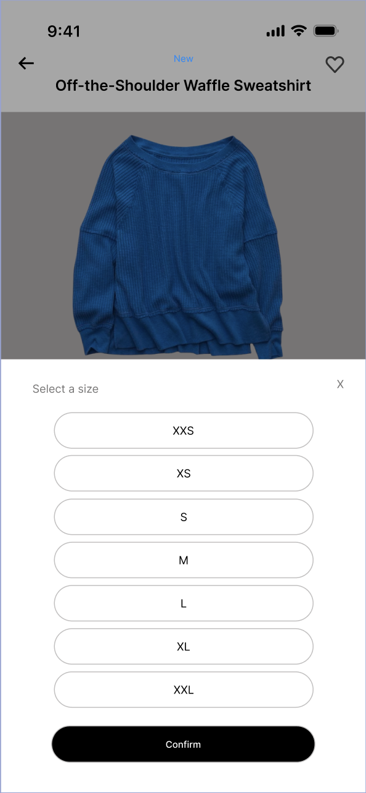
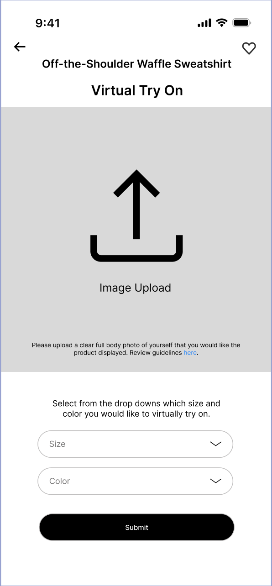
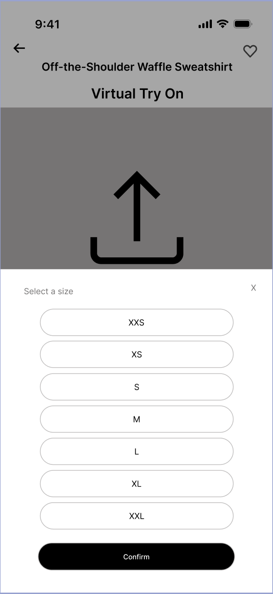
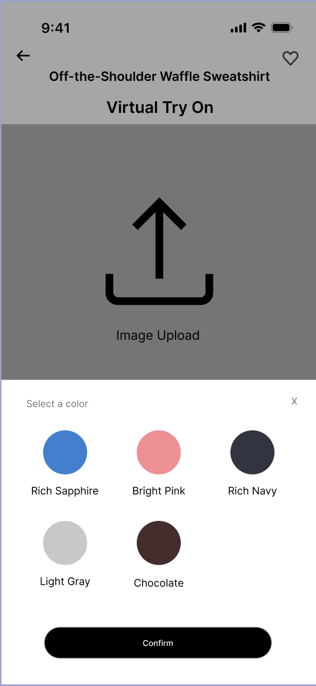
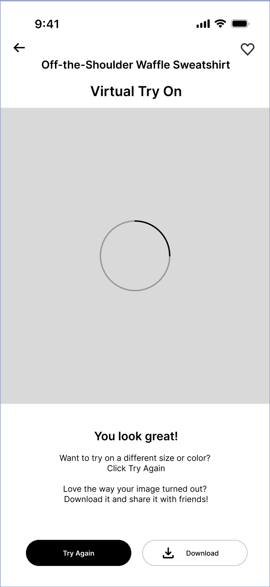
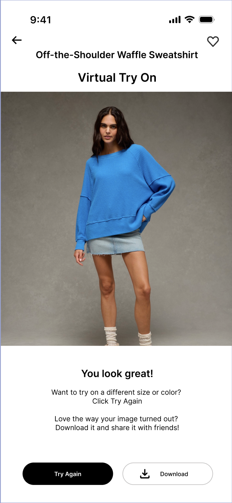

High Fidelity App Design
In this group project, we designed an enterprise-scale shopping app experience that improves online shopping in a specific retail sector, with the goal of innovating and enhancing existing digital retail experiences. Using analytical horizon-scanning, we identified opportunities by examining trends, signals, enablers, and blockers shaping modern shopping behavior. We then combined qualitative and quantitative research—including interviews, observation of shopping behaviors, and industry benchmarking/analytics—to understand the problem space and justify feasibility and value for both shoppers and retailers. From our analysis, we produced key UX artifacts such as task flows and user journey/scenario mapping, and iteratively moved from sketches and low-fidelity prototypes to a fully interactive high-fidelity prototype in Figma. Throughout the process, we evaluated the design at multiple stages and documented our decisions by connecting interface and interaction choices back to UX principles, culminating in a complete process write-up and final prototype.
*Images and concepts are sampled from and inspired by the American Eagle Outfitters app*






